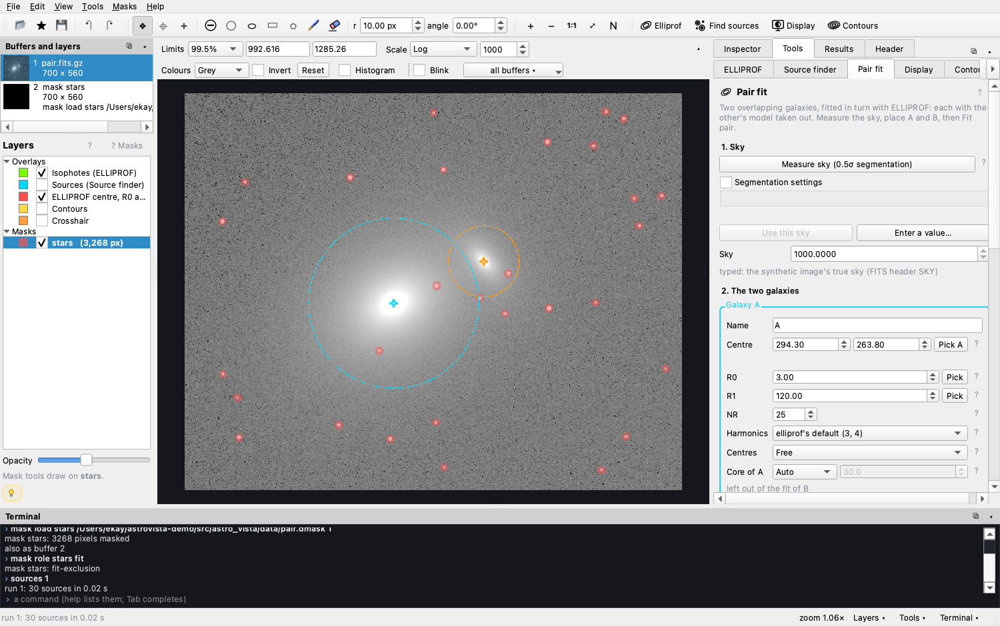
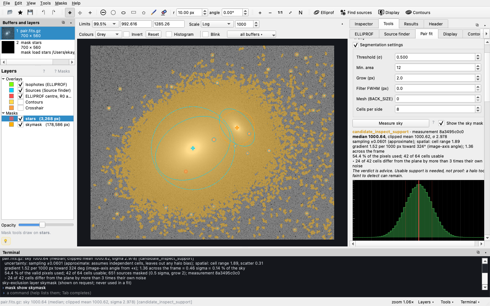
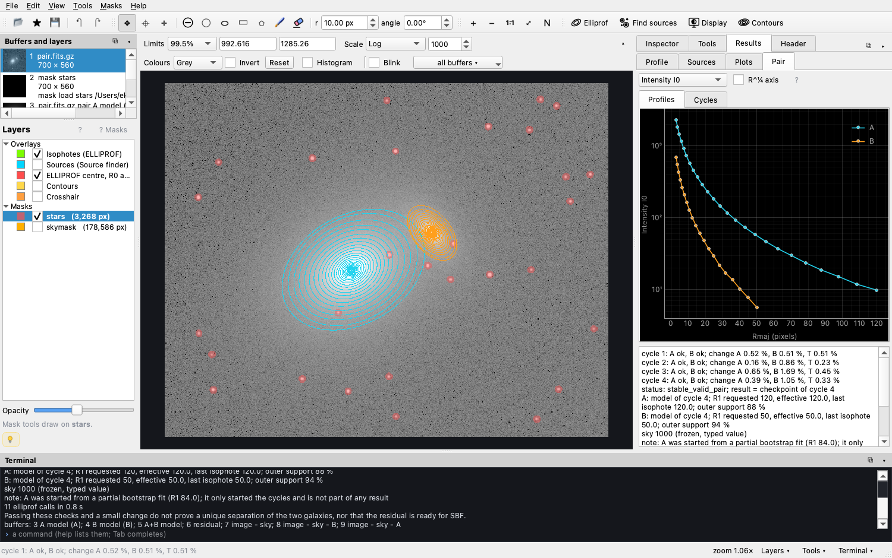
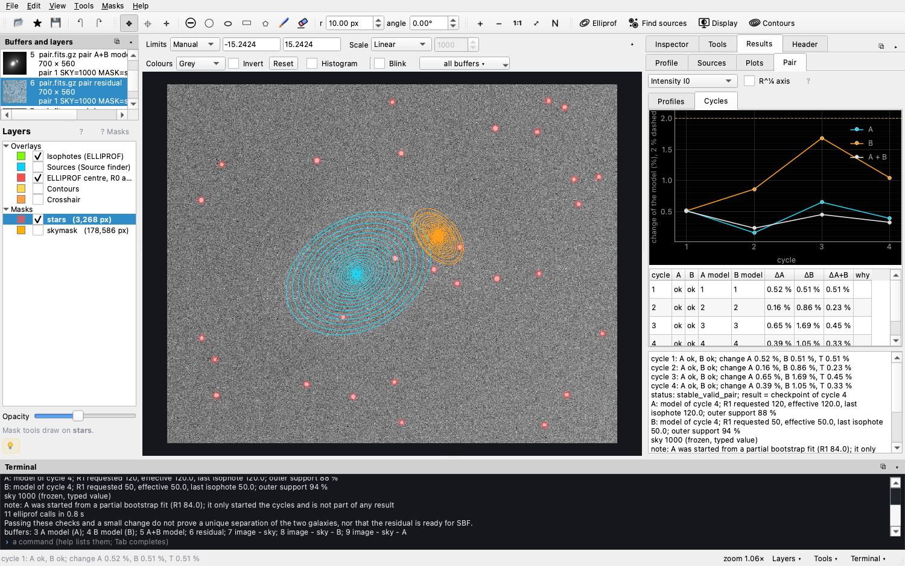

Tutorial
Two galaxies at once
When two galaxies overlap, each one's light lies on the other's isophotes. Masking the neighbour is not enough: its halo reaches far beyond any mask, and pulls the ellipticity, the position angle and the profile of the galaxy being fitted towards it. The Pair fit tool fits both galaxies, in turn, each with the other's current model taken out of the image.
This lesson uses a synthetic pair that ships with AstroVista Lite, so that the right answer is known: two elliptical galaxies that follow de Vaucouleurs' law, 140 pixels apart, with stars, a sky of 1000 and noise. The true values are in the image's FITS header.
-
Open the pair
Choose File ▸ Open the pair example. The image goes into buffer 1, a mask of the stars is loaded (with the role fit: it is left out of every fit), the sources are found, and the Tools ▸ Pair fit tab opens with the two galaxies already placed. The dashed circles are each galaxy's R1: guides, not fits.

The same in the terminal:
rd 1 pair.fits mask load stars pair.dmask 1 mask role stars fit # left out of fits sources 1 -
Measure the sky
Press Measure sky. Every source found down to the threshold (half the noise by default: stars, both galaxies and their halos) is left out, grown by two pixels, and the sky is measured on the rest: its median (the histogram shows those pixels), the medians of 8 × 8 cells across the frame (the map: dark is low, hatched cells have too little sky), a plane through them (the arrow: the gradient) and the uncertainties, kept apart. The segmentation settings are all open: a lower threshold, a larger mesh (
BACK_SIZE) or a detection filter (FWHM) mask more or less. Show the sky mask draws what is left out.
Here the verdict is candidate_inspect_support: half the cells disagree with the plane by more than their noise allows, because the galaxies' faint halos still lie under the "sky". The level, 1000.6, is close to the truth (1000), but not certain. The verdict is advice: Use this sky takes the median as the base level all the same, and the verdict goes with the fit. The example has typed the true sky instead; you can also type a value you trust (from a larger image, say) with a note on where it comes from.
The sky factor. The sky subtracted is factor × base. After a fit, step 5 of the panel shows the residual, image − sky − A − B, on the sky pixels, with its histogram: its median m suggests the next factor, factor + m / base (Use the next factor, then fit again). Refine the factor does this up to N times and keeps the fit with the smallest |m|; Results ▸ Pair ▸ Sky lists every fit. ELLIPROF's models reach beyond R1, so their outer light is part of that residual.
sky 1 SEGMENT # the sky, by segmentation sky 1 SEGMENT THRESH=1 GROW=3 TOMAP=12 # other settings; the cell map in buffer 12 sky 1 SEGMENT THRESH=0.05 BACK_SIZE=500 FWHM=2 # mask more: low threshold, a mesh, a filter mask show skymask # what is left out of the skyThe sky layer it makes,skymask, covers the galaxies too, so it is never used in a fit:pairandelliprofrefuse it. -
Place the two galaxies
Press Pick A and click galaxy A's centre, then B's (the next click is B's). A click within 3 pixels of a found source takes the source's centre, and the card says so; Alt-click places it exactly. Give each galaxy its own R0, R1 and number of ellipses: B is smaller, so it gets a smaller R1. Swap exchanges A and B (A is fitted first).
QuestionWhere does B's light end? Blink with a stronger stretch, or plot a row through both centres (print, or the Inspector). How far out can you trust each galaxy's ellipses? -
Fit the pair
Press Fit pair. A is fitted first (with B's core left out), then B on the image minus A; then four cycles of A on the image minus B and B on the image minus the new A. The progress line counts the elliprof calls; the window stays alive, and Stop ends the run after the current call.
pair 1 SKY=1000 MASK=stars \ A: NAME=A X0=294.3 Y0=263.8 R0=3 R1=120 \ B: NAME=B X0=421.18 Y0=322.97 R0=3 R1=50 NR=20
Every fitted ellipse of A (magenta) and B (orange); Results ▸ Pair plots the two profiles. -
Read the result
The status says how it ended: here stable_valid_pair. Four buffers hold A's model, B's model, A + B and the residual, the image minus the sky and both models on every pixel (masks are drawn over it; they never blank it). It opens grey, linear and symmetric about zero.

The residual, and the change of A, B and A + B from cycle to cycle (Cycles tab). Blink the result steps through image − sky, A + B, image − sky − B (galaxy A alone) and image − sky − A (galaxy B alone) on one scale, with the arrow keys.
A alone, and the ellipticities: A near 0.25 and B near 0.40, as made. QuestionFit B alone withelliprof, with A's core masked (the ELLIPROF tool). Compare its ellipticity and position angle with the pair fit's, and with the truth in the header (chead 1 B_). -
Keep the result
Export pair… writes a folder with everything: the exact inputs of the run (the image, the masks, the two cores), the requested and effective settings, every elliprof call, the profiles, the ellipses as DS9 regions, the models and the residual (64-bit), and a manifest of checksums, written last.
pairexport 1 my_pair
How it works
start: A on the image (B's core left out)
B on the image − A (A's core left out)
cycle k: A on the image − B, then B on the image − A (k = 1 … CYCLES)
result: A, B, A + B, and the residual: image − sky − A − B, on every pixel
- One sky, frozen: every call subtracts the same value once.
- Cores: while one galaxy is fitted, the other's core is left out, where its model is least reliable: its Kron ellipse from the source finder, at most 0.65 of the distance between the centres and 50 pixels (a circle when no source matches). The cores never cover the other centre, and they do not change during the run.
- Checks: a fit counts only if it has every ellipse, finite values, ellipticities below 0.95, no two ellipses of the same galaxy crossing (2 % tolerance), no lone jump of the centre, axis ratio or angle, and its last ellipse at R1. Ellipses of A and B may cross: they are different galaxies. A rejected fit is never used.
- Bootstrap: if a galaxy's first fit fails because its neighbour is too bright, it starts from a smaller R1; that model only starts the cycles and is never a result.
- Adaptive R1 (per galaxy, off by default): if the outer ellipses fail, a smaller R1 is tried, at most three times; the R1 asked for, tried and used are all reported.
The automatic settings
In the window, the Pair fit tab starts in Automatic: you choose the sky, the
masks and the two centres, and the rest is what worked best on simulated pairs. Each
galaxy's R1 is measured where its light falls below the noise. The first fits start at a
third of R1 and grow outwards. Eight variants of damping, centre fitting and growth are
fitted, and the one with the smallest residual is kept. A sky gradient that the residual
shows is removed, and with a measured sky the sky factor is refined three times
(SKYITER=3). Automatic, adjustable shows the same values so that you
can change any of them. Manual is the command used above.
pair 1 SKY=1000 MASK=stars CORES=0 CYCLES=6 CONVERGE=0.02 CONSECUTIVE=2 \
DAMP=0.5 TRYDAMP=1,0.5 TRYFIX=1,0 TRYFACTOR=1.5,1.25 TIE=-3 RMSTAR \
TAIL=measured SKYPLANE=1 PARALLEL=3 \
A: X0=294.3 Y0=263.8 R0=3 R1=AUTO START=AUTO NR=AUTO FIXCTR=1 \
B: X0=421.18 Y0=322.97 R0=3 R1=AUTO START=AUTO NR=AUTO FIXCTR=1The report lists every variant with its score, says which was kept and why, and gives the R1 each galaxy reached.
Harder fields
Four settings, in every mode of the panel, are for real frames: a bright star next to a galaxy, a fit that settles on slightly different models from slightly different radii, many variants to fit, or isophotes that are not quite ellipses.
- Parallel fits (
PARALLEL=) fit that many variants of the search at the same time. The fit kept is the same; only the time changes. When two or more fits are within 5 % of the best residual, their mean model, mean residual and the spread of their models are put in buffers too. The spread shows where the answer depends on the choices searched. - Runs to average (
RUNS=,JITTER=) fit the fit kept again, each time with every galaxy's R0 and R1 changed at random by 10–15 %. The runs are averaged into the mean A, B and A + B models, the mean residual and the spread of the models, and the report lists every run.SEED=repeats the same changes. - Mask star wings and spikes (
WINGS=1): the light of a bright star reaches beyond its segment, and its wings and diffraction spikes are left in the residual. With this setting a first pass is fitted, and what its residual shows next to a masked source is added to the mask. It never masks pixels near a galaxy's centre, and specks of SBF or noise that touch no mask are left alone. - Search every harmonic (
HARMONICS=AUTO) tries everyCOS3XandCOS4Xfor A, then for B, on the fit kept. Another combination replaces the fit kept only when it lowers the residual by more than 0.01 of the noise. ELLIPROF's default, each isophote's own terms, already follows boxy and disky galaxies. The search takes about 1.7 times as long and matters mostly next to a bright star.
pair 1 SKY=1000 MASK=stars RUNS=4 PARALLEL=4 \
A: NAME=A X0=294.3 Y0=263.8 R0=3 R1=120 \
B: NAME=B X0=421.18 Y0=322.97 R0=3 R1=50 NR=20Joe's mode
Joe's mode (Settings ▸ Joe's mode, METHOD=JOE) fits a pair the
way Joe Jensen does it by hand. Each galaxy's centre is left out while the other is
fitted. The smaller galaxy is fitted first, not far out, then the other on the image
minus it. Then the two take turns, and each R1 grows only as far as its outer ellipses,
fitted with free centres, do not move towards the other galaxy. There is no search and
no sky refinement, so it takes seconds where Automatic takes a minute or more. On
simulated pairs its errors were close to Automatic's, with worse worst cases; on real
fields it left more large-scale structure in the residual. It is a quick first look,
and its steps in the report show where each galaxy is pulled.
Its box in the panel sets which galaxy goes first (FIRST=), how much R1
grows each cycle (JOEGROW=, 1.3), the centre left out
(JOECORE= 0.2 of the separation, from JOECOREMIN= 6 to
JOECOREMAX= 30 px), what counts as a pull (PULLPX= 0.5 px or
PULLFRAC= 2 % of the radius, PULLRUN= 2 isophotes in a row,
judged by a free-centre fit from PULLR0= 8 px), the centres of the model
kept, the cycles, the smoothing and the model beyond R1. Each galaxy's card sets its R0,
R1, first R1 (START=), NR and harmonics (COS3X=,
COS4X=); each can stay automatic.
pair 1 SKY=1000 MASK=stars METHOD=JOE CYCLES=12 TIE=-3 RMSTAR TAIL=measured \
FIRST=B JOEGROW=1.25 PULLPX=1 \
A: X0=294.3 Y0=263.8 R0=3 R1=120 FIXCTR=1 \
B: X0=421.18 Y0=322.97 R0=3 R1=50 NR=20 FIXCTR=1The pull check. Every complete fit, whatever the settings, ends with Joe's
test. Each galaxy is fitted once more with free centres, on the image minus the other's
model, and the report says whether its outer ellipses move towards the other galaxy and
from which radius. Beyond that radius the galaxy's light is not separated from the
other's. The check changes nothing in the result; PULLCHECK=0 turns it
off.
Some pairs used to fail at their first fit, and the fit now starts them anyway:
- A fitting mask that covers a galaxy's own centre (a mask made to fit the other galaxy alone) is lifted there.
- When the innermost isophotes (within 10 px, where the pixels and the PSF set the shape) cross, the galaxy is fitted from a larger R0.
- A close pair whose first radius is too small for ELLIPROF is started further out.
The report notes each of these changes.
How a fit ends
| stable_valid_pair | Both fits passed in the last cycle, and A, B and A + B each changed by less than 2 %. |
| valid_pair_not_stable | Both passed, but something still changes; the reason says what (a stable sum whose parts trade light is not stable). |
| retained_after_failed_update | A fit failed in the last cycle; the result is the last cycle in which both passed. |
| incomplete_initialization | No cycle in which both galaxies passed. |
| cancelled | Stopped; the result is the last cycle in which both passed. |
Exercises
- Fit the pair with 1, 2 and 8 cycles (
CYCLES=). When does the change fall below 2 %? Does the profile of B change? - Make B's R1 70 pixels. What happens to its outer ellipses, and to the status? Try
again with
ADAPTIVEafter B's keywords. - Use a sky 10 counts too high (
SKY=1010). How do the outer profiles and the residual change? - Start from a sky 3 counts too high and let the factor refine it:
pair 1 SKY=1003 SKYITER=5 MASK=stars A: … B: …(aftersky 1 SEGMENT). Where does it end, and how close is it to the true 1000? - Make a closer pair in Python:
astro_vista.synthetic.pair(separation=95). How does the fit end? - Fit the pair with
RUNS=5. Display the spread of the models: where do the runs disagree, and by how much compared with the noise? - Fit it with
PARALLEL=1and thenPARALLEL=4in the automatic settings. Compare the time, and the fit kept.